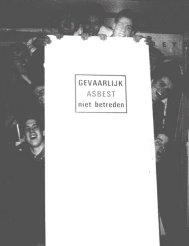

Menu
 Dè Basis
Dè Basis
Dè Mannen
Hèt Verhaal
Hèt Fotoboek
Dè Uitspraken
|
Welkom op dè website van Reinaert
Reinaert is één van de jaarclubs bij het DSCC/DJCR 'Audentis et Virtutis'.
Het doel van deze site is de wijze les, die eenieder op zijn tijd nodig heeft.
Wij, Reinaert zijn dè jaarclub van 2000 van Audentis. Een feit dat tijdens onze
presentatie op onze mooie sociëteit verwezenlijkt is.
Reinaert is een jaarclub die bestaat uit 9 humortrappende, vitale, energieke, grappige, brallende, zuipende,
corporale, lange (bijna allemaal), soms serieuze, aanwezige en oplettende mannen.
|

|
Het lot hebben wij omgezet in vertier en wij genieten van deze mooie tijd.
Avé Heeren, op den Vos (Au)
|